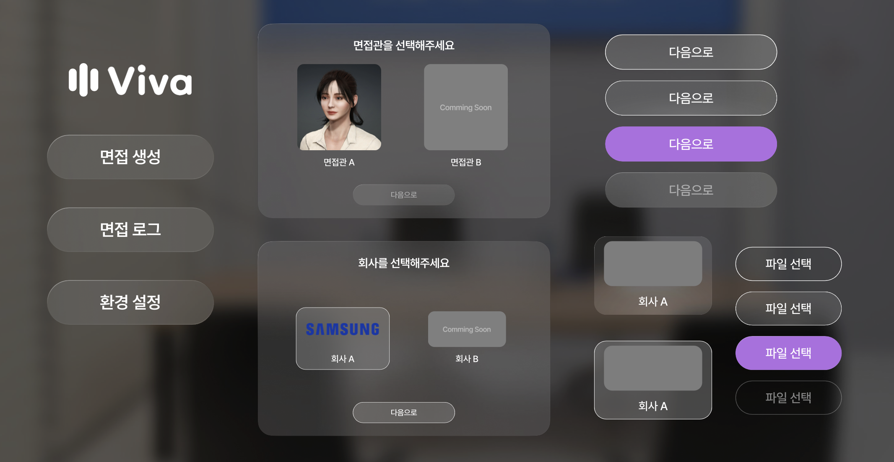

VIVA: Redefining the Job Interview Experience

In a world where job interviews can make or break career dreams, VIVA emerges as a beacon for job seekers. Leveraging cutting-edge generative AI and immersive VR technology, VIVA offers more than just a practice session—it creates a lifelike interview experience tailored to the user.
The Challenge
Research revealed that nearly half of job seekers find interviews the most daunting part of the hiring process. Questions like, "Why should we hire you?" or "How do you handle workplace conflicts?" leave many feeling unprepared and anxious. Even more, the rise of AI interviews brings its own set of challenges, from unfamiliarity with the process to doubts about its relevance.
Meet VIVA
Enter VIVA, designed to bridge the gap between traditional preparation methods and the dynamic needs of modern job seekers. VIVA creates an interview experience that feels authentic, adaptive, and insightful.
What Sets VIVA Apart?
- Real-time, AI-generated interview questions tailored to the user’s background and aspirations
- Detailed, actionable feedback to refine responses and boost confidence
- Immersive VR settings, replicating the pressure and unpredictability of real-life interviews
Technologies Used
VR Development, Unity, Blender, OpenAI GPT
Visual and Interaction Design
With a clean, intuitive interface, VIVA combines Pretendard and Gmarket Sans typography with a vibrant color palette that keeps users engaged. Each virtual interviewer is meticulously crafted to provide a human-like interaction, making every session memorable and impactful.
 ← Back to Projects